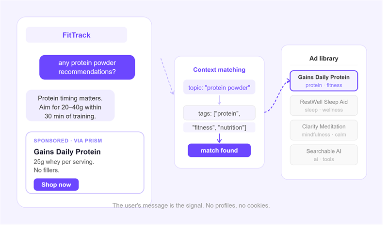

ad-tech
How Ad Matching Works in an AI Chat Interface

What is the direct answer?
In a chat interface, the user just told you exactly what they want, in plain language, right now. Prism uses that message directly as the matching input. No behavioral profiles, no cookies, no guesswork.
What are the key takeaways?
- When someone types "I've been struggling to sleep lately" into a wellness chatbot, or "any protein powder recommendations?" into a fitness assistant, that message carries more intent signal than almost any other data point in digital advertising.
- Not every message maps cleanly to an ad tag.
- Each ad in Prism can have a daily budget and a lifetime budget, both tracked in real time.
Most ad systems make a guess. They look at who you are: your age, your browsing history, what you bought six months ago, and serve something they think you might want. It works well enough for a banner at the top of a news article. It works poorly for a conversation.
In a chat interface, the user just told you exactly what they want. Not in aggregate, not inferred from behavior over time. Right now, in this message, in plain language. That changes the targeting problem completely.
What does the user's message actually contain?
When someone types "I've been struggling to sleep lately" into a wellness chatbot, or "any protein powder recommendations?" into a fitness assistant, that message carries more intent signal than almost any other data point in digital advertising. It is explicit. It is timely. It is in context.
Prism uses the user's message directly as the matching input. There is no profile to build, no cookie to read, no behavioral graph to consult. The topic is right there.
The matching process takes the user's message text, normalizes it (lowercase, trimmed), and checks it against the topic tags attached to each active ad. If an ad tagged ["protein", "fitness", "nutrition"] is in the system, and the user asks about protein powder, that ad is a candidate. It is not complicated. The power comes from the fact that the input is genuinely high-quality.
What happens when there is no direct match?
Not every message maps cleanly to an ad tag. Someone might say "ugh I had a rough day" in a wellness app, and that message does not obviously correspond to any product category. In those cases, Prism falls back to a weighted random selection from the full pool of eligible ads.
Weighted means advertisers can assign more or less weight to a given ad. A campaign with twice the weight gets roughly twice the impressions over time. It is a simple lever, but it matters for advertisers managing multiple creatives or running A/B tests.
The fallback is not a failure state. In a well-stocked ad marketplace, a relevant ad can still land even without a topic match. A sleep supplement ad served during a conversation about a rough day is not contextually off. It is adjacent in a way that still makes sense.
How does budget pacing work?
Each ad in Prism can have a daily budget and a lifetime budget, both tracked in real time. Before an ad is considered eligible for matching, the system checks whether either budget cap has been hit for the day or overall. If it has, that ad drops out of the eligible pool for that request.
This matters for advertisers who need spend control, and for publishers who want to avoid a situation where one advertiser's ads dominate every conversation. As more advertisers participate, the system balances naturally.
Why does this feel different to the user?
The thing that makes chat advertising different from banner advertising is the flow. A banner interrupts. It sits above content you were trying to read, or floats over it, or auto-plays with sound on. The relationship is adversarial.
An ad inside a chat conversation, served after the bot responds, visually distinct but part of the same thread, lands in a different way. The user just shared what they want. The system responded. A relevant product appearing next is a natural next step, not an intrusion.
That said, the format matters a lot. Prism uses a card format for most placements: a title, a short description, a clear call to action button, and a "Sponsored via Prism" label so there is no ambiguity about what it is. No tricks. The user can click or ignore.
What makes ad matching better over time?
Right now, Prism does topic matching based on tags that advertisers set manually when submitting an ad. If an advertiser tags their ad ["ai", "productivity", "tools"], it matches messages about AI productivity tools. If they tag it ["fitness"], it matches fitness-related messages.
The practical upside for advertisers: the more specific and accurate your topic tags, the better your match rate. A generic tag like ["health"] competes with everything. A tag like ["sleep", "insomnia", "recovery"] reaches the right conversations.
For publishers, the implication is different. The more clearly scoped your bot or assistant is to a topic area, the higher the match rate will be. A fitness chatbot where users consistently talk about workouts and nutrition will see better ad relevance than a general-purpose assistant where the topics jump around.
What version are we building toward?
Context matching on raw message text is the starting point. The next layer is reading not just the user's current message but the thread. What has the conversation been about for the last few turns? What problem is the user actually trying to solve, not just what did they type in the last message?
That richer context produces better matches and, more importantly, better timing. A product recommendation that shows up at the right moment in a longer conversation lands differently than one served on the first message.
The infrastructure for that already exists in the request structure. It is a matter of feeding more signal in. That is where this goes.
Prism is a contextual ad marketplace built for AI chat interfaces. Publishers integrate the SDK and earn when relevant partner products are surfaced inside their bots. Advertisers reach users at the moment they are already asking about what they sell.
If you are building an AI assistant or chatbot and want to see how this fits your product, get in touch.
Frequently asked questions
What does the user's message actually contain?
When someone types "I've been struggling to sleep lately" into a wellness chatbot, or "any protein powder recommendations?" into a fitness assistant, that message carries more intent signal than almost any other data point in digital advertising. It is explicit. It is timely. It is in context.
What happens when there is no direct match?
Not every message maps cleanly to an ad tag. Someone might say "ugh I had a rough day" in a wellness app, and that message does not obviously correspond to any product category. In those cases, Prism falls back to a weighted random selection from the full pool of eligible ads.
How does budget pacing work?
Each ad in Prism can have a daily budget and a lifetime budget, both tracked in real time. Before an ad is considered eligible for matching, the system checks whether either budget cap has been hit for the day or overall. If it has, that ad drops out of the eligible pool for that request.
A chat-ad path that is not ChatGPT-priced
Indie chatbot apps still need labelled partner offers. ChatGPT-scale ad deals are out of reach. The SDK returns a labelled card or nothing. Three lines. The key stays on your server.